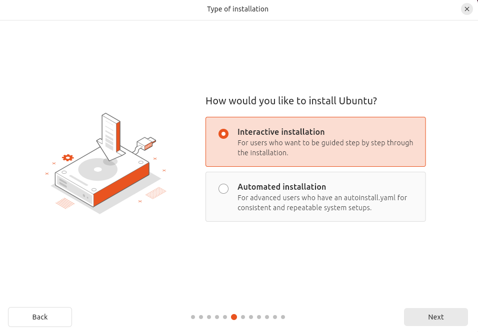

How to Install and Configure Ubuntu Desktop (Beginner Guide)
This guide will help you, step by step, to install Ubuntu Desktop on your computer. It is written for beginners, so you do not need any experience with Linux. We will use many pictures to make everything clear. If you follow each step, you will have Ubuntu running in no time!
Step 1: Download Ubuntu and Create a Bootable USB Stick
- Download Ubuntu:
Go to the official Ubuntu website and click on the download button. Save the file (it is called an ISO) somewhere you can find it.

- Prepare a USB Stick:
Find a USB stick with at least 8GB of space. If there is any data on your USB stick, make a backup first. Make sure there is nothing important on it, because it will be erased!
- Write Ubuntu to the USB Stick:
- On Windows: Download and open Rufus. Select your USB stick and the Ubuntu ISO file, then click Start.
- On Mac or Linux: Download and open balenaEtcher. Select the ISO file and your USB stick, then click Flash.
Wait until the process is finished. Then safely remove the USB stick from your computer.
Step 2: Boot from USB and Start Installation
- Insert the USB Stick: Plug the USB stick into the computer where you want to install Ubuntu.
- Restart the Computer: Turn on (or restart) the computer. You need to make the computer boot from the USB stick instead of the hard drive.
Important: The key to open the boot menu is different for every computer brand and model. Common keys are F12, ESC, F2, F9, or DEL. When your computer starts, look for a message like "Press F12 for Boot Menu" or "Boot Options".
- For example: HP ProBook G8: F9
- Dell: F12
- Lenovo: F12 or Enter
- Acer: F12
- Asus: ESC

- Open the Boot Menu: When the computer starts, press the key for the boot menu (often F12, ESC, F2, or DEL). Choose the USB stick from the list.
- Start Ubuntu: You will see a menu. Select Try or Install Ubuntu and press Enter.

Step 3: Complete the Installation
- Choose Language: Select your language and click Install Ubuntu.

- Keyboard Layout: Choose your keyboard layout and click Continue.
- Updates and Other Software: Choose Normal installation and check the boxes for updates and third-party software if you want. Click Continue.
 - Installation Type: If you want to erase the whole disk, choose Erase disk and install Ubuntu. If you want to keep other systems, choose Something else.

- Set Your Location: Click on the map or type your city, then click Continue.

- Create Your User: Enter your name, computer name, username, and password. Write down your password so you don’t forget!

- Wait for Installation: Ubuntu will now install. This can take 10-20 minutes. When it is done, click Restart Now.

- Remove the USB Stick: When the computer restarts, remove the USB stick when you see the message.
Step 4: First Boot and Initial Configuration
- Log In: Enter your password to log in.
- Check for Updates: Open the terminal by pressing Ctrl+Alt+T and type:
sudo apt update && sudo apt upgrade
Press Enter and type your password if asked.

- Install Software: Open the Ubuntu Software app to find and install programs you need.

- Change Settings: Click on the system menu (top right) and open Settings. Here you can change your wallpaper, set up Wi-Fi, and more.

- Enable Firewall (Optional): For extra security, open the terminal and type:
sudo ufw enable
- Restart Your Computer: After updates and changes, it’s a good idea to restart your computer to make sure everything works well.
Summary
Congratulations! You have installed Ubuntu Desktop. Take your time to explore the system. If you get stuck, search online or ask for help in the Ubuntu community. Don’t forget to add your own photos to each step to make this guide even clearer for others!